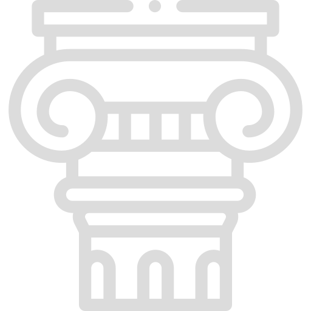

Возникновение Рима
Древний Рим являлся одной из наиболее
могущественных древних цивилизаций.
Он оказал огромное влияние на формирование
средневековых государств, дав им культурный
фундамент.
 Границы Дрвенего Рима с течением времени
Границы Дрвенего Рима с течением времени

Рим дал современности
правовую систему, христианство,
искусство, латынь и многое другое.
Интересный факт:
По легенде, один из основателей Рима -
Ромул, убил своего брата Рема в споре
за место основания города. Раскаявшись,
Ромул основал данный город и стал его
царём.